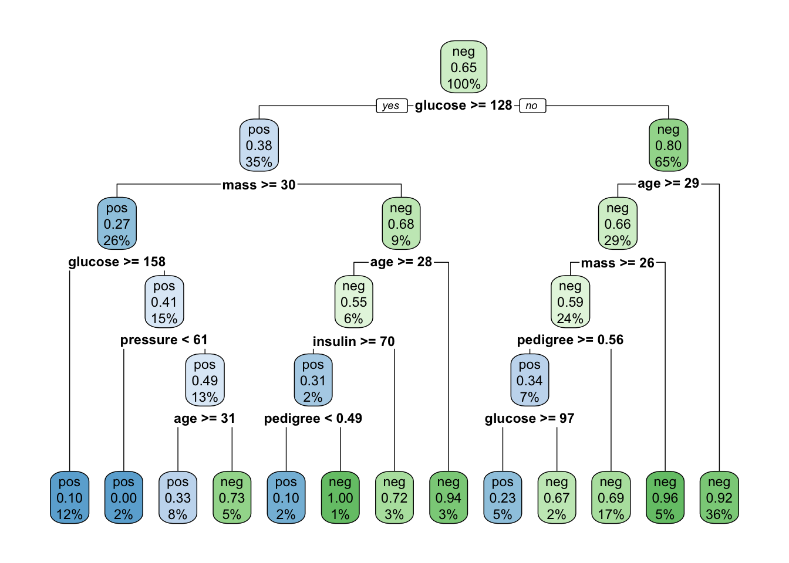

Fitting a classification decision tree
pregnant glucose pressure triceps insulin mass pedigree age diabetes
1 6 148 72 35 0 33.6 0.627 50 pos
2 1 85 66 29 0 26.6 0.351 31 neg
3 8 183 64 0 0 23.3 0.672 32 pos
4 1 89 66 23 94 28.1 0.167 21 neg
5 0 137 40 35 168 43.1 2.288 33 pos
6 5 116 74 0 0 25.6 0.201 30 neg# Split into training and testing datasets
set.seed(123)
data_split <- initial_split(PimaIndiansDiabetes, prop = 0.7, strata = diabetes)
train_data <- training(data_split)
test_data <- testing(data_split)Now, lets train a basic decision tree, remember, no issue with preprocessing, can just include all other variables! Recall what all of these varaiables mean: https://search.r-project.org/CRAN/refmans/mlbench/html/PimaIndiansDiabetes.html
basic_tree <- rpart(diabetes ~ ., data = train_data, method = "class")
basic_treen= 537
node), split, n, loss, yval, (yprob)
* denotes terminal node
1) root 537 187 neg (0.34823091 0.65176909)
2) glucose>=127.5 189 71 pos (0.62433862 0.37566138)
4) mass>=29.95 142 39 pos (0.72535211 0.27464789)
8) glucose>=157.5 62 6 pos (0.90322581 0.09677419) *
9) glucose< 157.5 80 33 pos (0.58750000 0.41250000)
18) pressure< 61 12 0 pos (1.00000000 0.00000000) *
19) pressure>=61 68 33 pos (0.51470588 0.48529412)
38) age>=30.5 42 14 pos (0.66666667 0.33333333)
76) pedigree>=0.415 25 4 pos (0.84000000 0.16000000) *
77) pedigree< 0.415 17 7 neg (0.41176471 0.58823529) *
39) age< 30.5 26 7 neg (0.26923077 0.73076923) *
5) mass< 29.95 47 15 neg (0.31914894 0.68085106)
10) age>=27.5 31 14 neg (0.45161290 0.54838710)
20) insulin>=69.5 13 4 pos (0.69230769 0.30769231) *
21) insulin< 69.5 18 5 neg (0.27777778 0.72222222) *
11) age< 27.5 16 1 neg (0.06250000 0.93750000) *
3) glucose< 127.5 348 69 neg (0.19827586 0.80172414)
6) age>=28.5 154 53 neg (0.34415584 0.65584416)
12) mass>=26.35 128 52 neg (0.40625000 0.59375000)
24) pedigree>=0.561 35 12 pos (0.65714286 0.34285714)
48) glucose>=96.5 26 6 pos (0.76923077 0.23076923) *
49) glucose< 96.5 9 3 neg (0.33333333 0.66666667) *
25) pedigree< 0.561 93 29 neg (0.31182796 0.68817204)
50) triceps< 27.5 54 22 neg (0.40740741 0.59259259)
100) glucose>=93.5 44 22 pos (0.50000000 0.50000000)
200) pressure< 84 36 15 pos (0.58333333 0.41666667)
400) pregnant< 7.5 25 7 pos (0.72000000 0.28000000)
800) pedigree< 0.379 18 2 pos (0.88888889 0.11111111) *
801) pedigree>=0.379 7 2 neg (0.28571429 0.71428571) *
401) pregnant>=7.5 11 3 neg (0.27272727 0.72727273) *
201) pressure>=84 8 1 neg (0.12500000 0.87500000) *
101) glucose< 93.5 10 0 neg (0.00000000 1.00000000) *
51) triceps>=27.5 39 7 neg (0.17948718 0.82051282) *
13) mass< 26.35 26 1 neg (0.03846154 0.96153846) *
7) age< 28.5 194 16 neg (0.08247423 0.91752577) *rpart.plot(basic_tree, extra = 101) # Plot the tree
When predicting, what will we be obtaining? Predictions? Classes? As with the previous we can specify this:
pos neg
4 0.08247423 0.9175258
8 0.27272727 0.7272727
11 0.12500000 0.8750000
19 0.17948718 0.8205128
28 0.08247423 0.9175258
29 0.69230769 0.3076923But lets stick with class (default threshold 0.5)
4 8 11 19 28 29
neg neg neg neg neg pos
Levels: pos negconf_matrix <- confusionMatrix(pred, train_data$diabetes)
print(conf_matrix)Confusion Matrix and Statistics
Reference
Prediction pos neg
pos 134 22
neg 53 328
Accuracy : 0.8603
95% CI : (0.8281, 0.8885)
No Information Rate : 0.6518
P-Value [Acc > NIR] : < 2.2e-16
Kappa : 0.68
Mcnemar's Test P-Value : 0.000532
Sensitivity : 0.7166
Specificity : 0.9371
Pos Pred Value : 0.8590
Neg Pred Value : 0.8609
Prevalence : 0.3482
Detection Rate : 0.2495
Detection Prevalence : 0.2905
Balanced Accuracy : 0.8269
'Positive' Class : pos
Now same thing with test
# Evaluate the basic model
pred <- predict(basic_tree, test_data, type = "class")
conf_matrix <- confusionMatrix(pred, test_data$diabetes)
print(conf_matrix)Confusion Matrix and Statistics
Reference
Prediction pos neg
pos 44 18
neg 37 132
Accuracy : 0.7619
95% CI : (0.7016, 0.8153)
No Information Rate : 0.6494
P-Value [Acc > NIR] : 0.0001491
Kappa : 0.4473
Mcnemar's Test P-Value : 0.0152192
Sensitivity : 0.5432
Specificity : 0.8800
Pos Pred Value : 0.7097
Neg Pred Value : 0.7811
Prevalence : 0.3506
Detection Rate : 0.1905
Detection Prevalence : 0.2684
Balanced Accuracy : 0.7116
'Positive' Class : pos
As expected, training is much higher than test! Overfitting happening. Can we do something about it by tuning hyperparameters?
Hyperparameters
We explained that in order to prevent overfitting, decision trees have stopping criteria in the form of hyperparameters. Explore different hyperparamter combinations and see the impact it has on the predictive model created.
First chek out the hyperparameters available. All information is available from the function help https://cran.r-project.org/web/packages/rpart/rpart.pdf and go to rpart and rpart.control
# Manually tune hyperparameters (example with maxdepth)
tuned_tree_depth <- rpart(diabetes ~ ., data = train_data, method = "class",
control = rpart.control(maxdepth = 3))
rpart.plot(tuned_tree_depth) # Plot the tuned tree
Very different!! What has happened? Lets evaluate the manually tuned model
pred_depth_train <- predict(tuned_tree_depth, train_data, type = "class")
conf_matrix_depth <- confusionMatrix(pred_depth_train, train_data$diabetes)
print(conf_matrix_depth)Confusion Matrix and Statistics
Reference
Prediction pos neg
pos 103 39
neg 84 311
Accuracy : 0.7709
95% CI : (0.733, 0.8058)
No Information Rate : 0.6518
P-Value [Acc > NIR] : 1.384e-09
Kappa : 0.4655
Mcnemar's Test P-Value : 7.268e-05
Sensitivity : 0.5508
Specificity : 0.8886
Pos Pred Value : 0.7254
Neg Pred Value : 0.7873
Prevalence : 0.3482
Detection Rate : 0.1918
Detection Prevalence : 0.2644
Balanced Accuracy : 0.7197
'Positive' Class : pos
pred_depth_test <- predict(tuned_tree_depth, test_data, type = "class")
conf_matrix_depth <- confusionMatrix(pred_depth_test, test_data$diabetes)
print(conf_matrix_depth)Confusion Matrix and Statistics
Reference
Prediction pos neg
pos 47 18
neg 34 132
Accuracy : 0.7749
95% CI : (0.7155, 0.8271)
No Information Rate : 0.6494
P-Value [Acc > NIR] : 2.434e-05
Kappa : 0.4822
Mcnemar's Test P-Value : 0.03751
Sensitivity : 0.5802
Specificity : 0.8800
Pos Pred Value : 0.7231
Neg Pred Value : 0.7952
Prevalence : 0.3506
Detection Rate : 0.2035
Detection Prevalence : 0.2814
Balanced Accuracy : 0.7301
'Positive' Class : pos
Accuracy has reduced BUT now the model is generalizable, it does not capture noise anymore, but the inherent relationship in the data, that is present in the test set too.
Attempt tuning another hyperparameter of your choice and see what happens. You can modify more than one at the same time!
Hyperparameter tuning
Hyperparameter tuning is part of our training process, as will determine the final predictive model. Going one by one to see which hyperparameter improves our training performance is tedious so, we can do a grid-search where we specify combinations of values we want our hyperparameters to explore:
# Grid search for hyperparameter tuning
grid <- expand.grid(maxdepth = 3:5, # Maximum depth
minsplit = c(10, 20)) # Minimum splitsView what this looks like!
results <- data.frame() # To store results
for (i in 1:nrow(grid)) {
tree_model <- rpart(diabetes ~ ., data = train_data, method = "class",
control = rpart.control(maxdepth = grid$maxdepth[i],
minsplit = grid$minsplit[i]))
pred <- predict(tree_model, train_data, type = "class")
accuracy <- sum(pred == train_data$diabetes) / nrow(train_data)
results <- rbind(results, cbind(grid[i, ], Accuracy = accuracy))
}
# Display sorted results
results <- results[order(-results$Accuracy), ]
print(results) maxdepth minsplit Accuracy
3 5 10 0.8342644
6 5 20 0.8286778
2 4 10 0.8007449
5 4 20 0.8007449
1 3 10 0.7709497
4 3 20 0.7709497Now lets train the final model with the best hyperparameters
# Train the final model with the best hyperparameters
best_params <- results[1, ]
final_tree <- rpart(diabetes ~ ., data = train_data, method = "class",
control = rpart.control(maxdepth = best_params$maxdepth,
minsplit = best_params$minsplit))rpart.plot(final_tree)
final_pred <- predict(final_tree, train_data, type = "class")
final_conf_matrix <- confusionMatrix(final_pred, train_data$diabetes)
print(final_conf_matrix)# Plot the final modelConfusion Matrix and Statistics
Reference
Prediction pos neg
pos 125 27
neg 62 323
Accuracy : 0.8343
95% CI : (0.8001, 0.8647)
No Information Rate : 0.6518
P-Value [Acc > NIR] : < 2.2e-16
Kappa : 0.6183
Mcnemar's Test P-Value : 0.0003134
Sensitivity : 0.6684
Specificity : 0.9229
Pos Pred Value : 0.8224
Neg Pred Value : 0.8390
Prevalence : 0.3482
Detection Rate : 0.2328
Detection Prevalence : 0.2831
Balanced Accuracy : 0.7957
'Positive' Class : pos
# Evaluate the final model
final_pred <- predict(final_tree, test_data, type = "class")
final_conf_matrix <- confusionMatrix(final_pred, test_data$diabetes)
print(final_conf_matrix)Confusion Matrix and Statistics
Reference
Prediction pos neg
pos 48 14
neg 33 136
Accuracy : 0.7965
95% CI : (0.7388, 0.8465)
No Information Rate : 0.6494
P-Value [Acc > NIR] : 7.342e-07
Kappa : 0.5277
Mcnemar's Test P-Value : 0.00865
Sensitivity : 0.5926
Specificity : 0.9067
Pos Pred Value : 0.7742
Neg Pred Value : 0.8047
Prevalence : 0.3506
Detection Rate : 0.2078
Detection Prevalence : 0.2684
Balanced Accuracy : 0.7496
'Positive' Class : pos
Hyperparameter tuning is guided by performance metrics in the training set alone! Remember, the test set can never be part of the fitting process